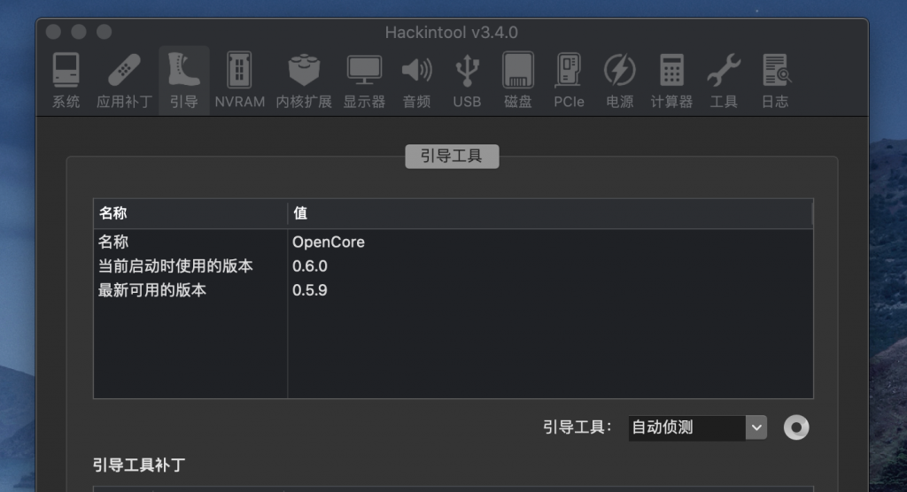
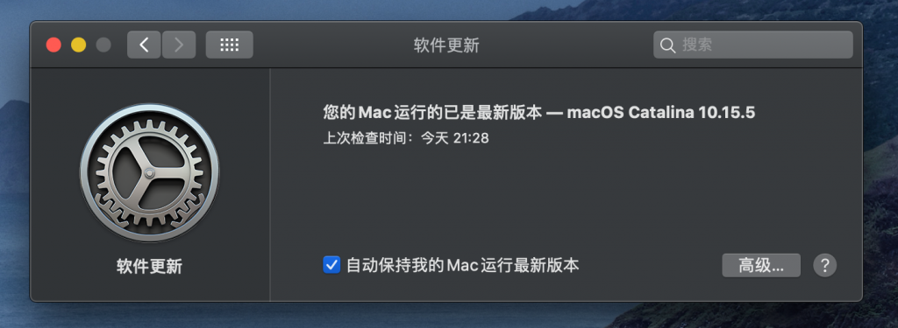
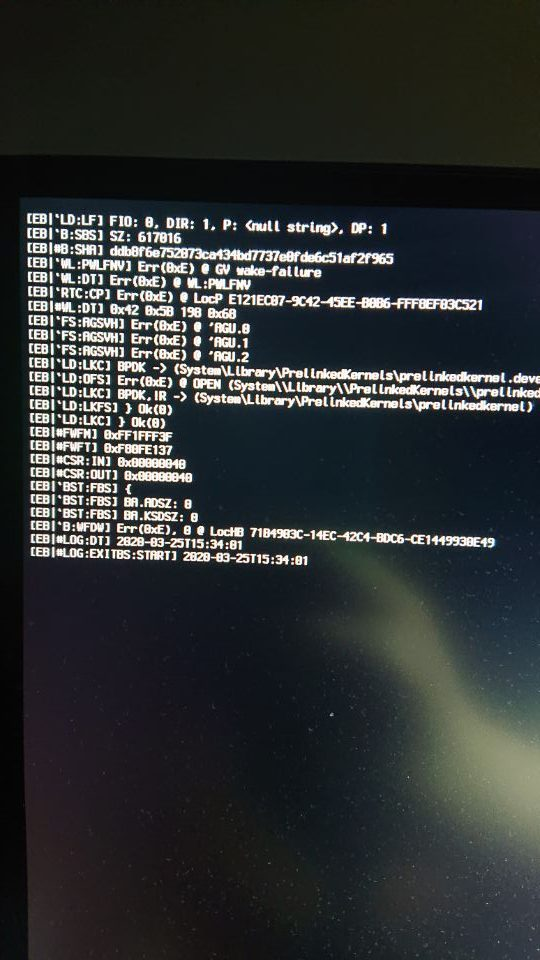

OpenCore0.6.0 for z97及更新macOS Catalina 10.15.5 补充更新
今天OpenCore0.5.9的ReleasesGitHub上传了，有需要的可去下载。
在GitHub上下载了0.6.0的源码并编译调试完成，我要去当小白鼠去啦。
编译的命令在0.6.0中有更改，文章：Opencore 的编译, 驱动的编译及导出也更新了。

同时也更新了macOS Catalina 10.15.5 的补充更新。很顺利，一次完成。

配置文件（EFI）已上传到文章：Hackintosh Asus z97 impact ( EFI OpenCore-0.6.0）
最后关于报错：

此问题就算bios关闭了cfg会报错。我现在将
-
Config-Kernel-Quirks-AppleCpuPmCfgLock -
Config-Kernel-Quirks-AppleXcpmCfgLock -
Config-UEFI-Quirks-IgnoreInvalidFlexRatio
这几项全部设为true。
这篇blog：OpenCore配置错误、故障与解决办法的总结差不多都是常见的问题，我大部分都遇到过。
总结一下：opencore启动报错都是配置文件没有配置正确。
完结，撒花。